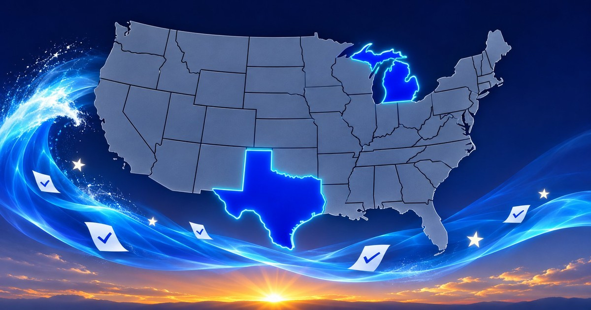

Texas and Michigan Turned Blue as Democrats Swept Congress

On Tuesday, November 3, 2026, American voters delivered what news outlets are calling a historic blue wave. Democrats seized control of both the Senate and the House, flipping seven Republican-held Senate seats — in Iowa, Kansas, Maine, North Carolina, Ohio, South Carolina, and Texas — and, according to exit polls reported by Reuters, about half of voters said they saw the election as a chance to rebuke President Donald Trump.
This post is not about every race in the country. It is about the two states that tell the story best: Texas, where a 32-year drought ended in one night, and Michigan, where Democrats now hold the Governor’s Office, the Senate seat, and the Legislature.
The short version
- Democrats took back both houses of Congress on November 3, 2026, flipping seven Senate seats.
- In Texas, Democrats won statewide for the first time since 1994 — Senate, Governor, and down the ballot.
- In Michigan, Democrats swept the top offices and took a governing trifecta in Lansing.
- The names to remember are James Talarico and Gina Hinojosa in Texas, and Abdul El-Sayed, Jocelyn Benson, and Garlin Gilchrist in Michigan.
- Other states swung too, Republicans still had real wins of their own, and the results are still unofficial until certified.
Texas: the breakthrough Democrats chased for decades
Texas Democrats had not won any statewide office since 1994. That streak ended on Tuesday.
- James Talarico, U.S. Senate. Talarico defeated Republican Attorney General Ken Paxton in what CNN called the most expensive Senate race in U.S. history, becoming the first Democrat to win a Texas Senate seat since 1988.
- Gina Hinojosa, Governor. Hinojosa, a State Representative from Austin, defeated three-term Republican Governor Greg Abbott, becoming the first Latina Governor elected in Texas.
- Vikki Goodwin, Lieutenant Governor. Goodwin, a State Representative from Austin, defeated longtime incumbent Republican Dan Patrick, who had driven the State Senate’s agenda for more than a decade.
- Nathan Johnson, Attorney General. Johnson, a State Senator from Dallas, won the office Paxton vacated to run for Senate.
Democrats also won races for Comptroller, Land Commissioner, Agriculture Commissioner, and Railroad Commissioner, and, according to the El Paso Times, claimed victories in 13 of 14 statewide races. In the House, Tejano singer Bobby Pulido ousted Republican Representative Monica De La Cruz in the Rio Grande Valley, and Katy Padilla Stout won the sprawling 23rd District. One question was still open on Wednesday: whether Democrats would also take the Texas House, which Republicans have controlled since 2003.
Why Texas matters beyond Texas: with 40 electoral votes, a competitive Texas changes the national map. Talarico carried most counties in predominantly Hispanic South Texas by convincing margins — including Hidalgo County, south of San Antonio, by 46 points after Trump won it by 3 points in 2024.
Michigan: a clean sweep at the top
Michigan’s result was less of an upset and more of a consolidation — but it was complete.
- Abdul El-Sayed, U.S. Senate. El-Sayed, an epidemiologist who once ran a County Health Department, beat Republican Mike Rogers to become the nation’s first Muslim U.S. Senator.
- Jocelyn Benson, Governor. Benson, Michigan’s Secretary of State since 2019, defeated Republican Representative John James to succeed term-limited Governor Gretchen Whitmer. Her running mate, Senate Majority Leader Winnie Brinks, becomes Lieutenant Governor.
- Garlin Gilchrist, Secretary of State. Gilchrist, the current Lieutenant Governor, defeated Republican Anthony Forlini to take over the office Benson is leaving — the office that runs Michigan’s elections.
- Eli Savit, Attorney General. Savit defeated Republican Doug Lloyd, completing the statewide sweep.
Democrats also flipped the Michigan State House while retaining the State Senate, giving them a governing trifecta in Lansing, according to the Detroit Free Press and other Michigan outlets. Michigan also saw historic midterm turnout, with nearly 5 million residents casting ballots.
Other States: the swing was national, not just Texas and Michigan
Yes — other states had major swings to Democrats as well:
- Senate flips: Iowa (Josh Turek), Kansas (Adam Hamilton — the first Democrat to win a Kansas Senate seat since 1932), Maine (Troy Jackson, who ousted five-term Republican Senator Susan Collins), North Carolina (Roy Cooper, the former Governor), Ohio (Sherrod Brown), and South Carolina (Annie Andrews, a pediatrician who defeated the Trump-backed candidate in a state Trump carried by nearly 18 points in 2024).
- Governor flips: Georgia (Keisha Lance Bottoms — the first Black woman elected Governor of any U.S. state), Iowa (Rob Sand), Nevada (Aaron Ford), and Ohio (Amy Acton), in addition to Texas — five Governor flips in total.
- Other Governors and Senators held or won: Xavier Becerra, California Governor — California’s first Latino Governor; Chris Pappas, New Hampshire Senate — the first openly gay man elected to the Senate; Peggy Flanagan, Minnesota Senate — held the seat for Democrats.
- State Legislatures: Democrats flipped at least seven State Legislative Chambers, and broke Republican supermajorities in Florida, Indiana, Iowa, Kansas, Missouri, and North Carolina. Georgia flipped its State House for the first time in more than 20 years, and Arizona, Minnesota, Pennsylvania, and Wisconsin moved toward Democratic trifectas. In Indiana, Democrats cracked the Republican supermajority in the House for the first time in 14 years, including defeating House Speaker Todd Huston.
- Redistricting backfired: Republicans redrew House maps in several states to protect their narrow majority, but Democrats held on to targeted seats in Florida, Texas, Ohio, Alabama, and North Carolina, and picked up seats in California and Utah, according to CNN.
The good news for Republicans — because it was not a total wipeout
It would be unfair to write this as if Republicans won nothing. They did not.
- Florida held. Republican Byron Donalds won the Governor’s race, becoming Florida’s first Black Governor and the first Black Republican Governor in the country, and Republican Ashley Moody won election to the U.S. Senate seat she had held by appointment. Republicans won every statewide race in Florida, even if by narrower margins than expected, and kept majorities in both chambers of the Florida Legislature.
- Republican Senate seats held. Republicans held Senate seats in Wyoming (Harriet Hageman), Kentucky (Andy Barr), Nebraska (Pete Ricketts, who fended off Independent Dan Osborn), Montana (Kurt Alme), and Florida (Ashley Moody), among others.
- Florida voters also approved Amendment 3, a property tax measure championed by outgoing Republican Governor Ron DeSantis.
- Some races were still open on Wednesday — Senate races in Alaska and Mississippi, Governor races in Alaska and Kansas — so the final map was not yet complete.
Those wins matter, and they show that the country did not simply vote one way everywhere. Florida, in particular, withstood a national wave that swept through Texas, the Midwest, and the Southeast.
What I am taking away
Even with those Republican wins, this was an overwhelming win for Democrats — and, in my view, it was primarily driven by President Trump’s failures on his campaign promises, the Iran war, the significant influence of Israel on American politics, and the refusal to fully release the Epstein files.
Voters were promised lower prices and an end to endless wars. Instead, according to the exit polls and the results themselves, they got higher costs, a war with Iran that Vice President JD Vance himself pointed to as a reason for the loss, and a government that, in the eyes of many voters, seemed more responsive to Israel’s interests than to American families at home — while the Epstein files, which many voters expected to be fully released, remained only partly disclosed. That combination — broken promises at home, war abroad, foreign influence over American politics, and a lack of transparency on Epstein — is, I believe, what turned a normal midterm penalty for the party in power into a historic wave.
Two other things stand out to me. First, this was not one star candidate carrying a party — it was a bench, from State Representatives in Austin to a County Health Director in Michigan, winning offices they had not held in a generation. Second, the Texas result in particular shows how quickly a “solid” state can stop being solid when turnout changes, especially in Latino communities that, according to Reuters, bore the brunt of the administration’s immigration sweeps.
That said, a word of caution belongs in any post written the day after an election: these are Associated Press and network calls on unofficial counts. Results are certified later in November, and two Senate races — in Alaska and Mississippi — were still undecided on Wednesday. The wave is real, but the final seat counts are not yet set in stone.
Sources
- CNN, “A historic blue wave, a stunning rejection of Trump and other takeaways from the midterms,” November 4, 2026
- Reuters, “Democrats seize Congress in sweeping midterm repudiation of Trump,” November 4, 2026
- Reuters, “‘A mandate for change’: Democrats remake Texas politics in election rout,” November 4, 2026
- USA Today, midterm election live updates, November 3–4, 2026
- Detroit Free Press / WCMU, Michigan midterm live updates, November 4, 2026
- Associated Press election results, November 3, 2026